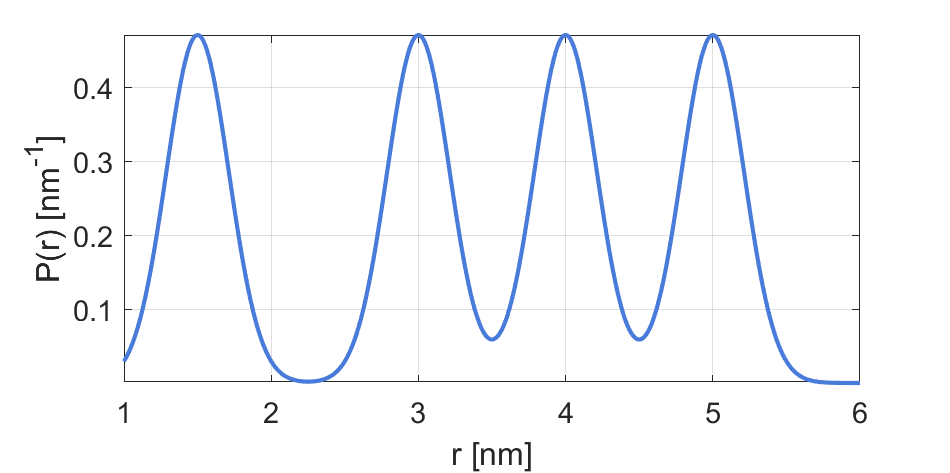

dd_fourgauss¶
Sum of four Gaussian distributions parametric model
Syntax¶
info = dd_fourgauss()
P = dd_fourgauss(r,param)
- Parameters
r- Distance axis (N-array)param- Model parameters
- Returns
P- Distance distribution (N-array)info- Model information (struct)
Model¶

with 
| Variable | Symbol | Default | Lower | Upper | Description |
|---|---|---|---|---|---|
param(1) |
 |
2.5 | 1.0 | 20 | 1st Gaussian mean distance |
param(2) |
0.5 | 0.2 | 5 | 1st Gaussian FWHM | |
param(3) |
 |
3.0 | 1.0 | 20 | 2nd Gaussian mean distance |
param(4) |
0.5 | 0.2 | 5 | 2nd Gaussian FWHM | |
param(5) |
 |
4.0 | 1.0 | 20 | 3rd Gaussian mean distance |
param(6) |
 |
0.5 | 0.2 | 5 | 3rd Gaussian FWHM |
param(7) |
5.0 | 1.0 | 20 | 4th Gaussian mean distance | |
param(8) |
 |
0.5 | 0.2 | 5 | 4th Gaussian FWHM |
param(9) |
0.25 | 0 | 1 | 1st Gaussian relative amplitude | |
param(10) |
0.25 | 0 | 1 | 2nd Gaussian relative amplitude | |
param(10) |
0.25 | 0 | 1 | 3rd Gaussian relative amplitude |
Example using default parameters:
{kind=link}
Description¶
info = dd_fourgauss()
Returns an info structure containing the specifics of the model:
info.model- Full name of the parametric model.info.nparam- Total number of adjustable parameters.info.parameters- Structure array with information on individual parameters.
P = dd_fourgauss(r,param)
Computes the distance distribution model P from the axis r according to the parameters array param. The required parameters can also be found in the info structure.